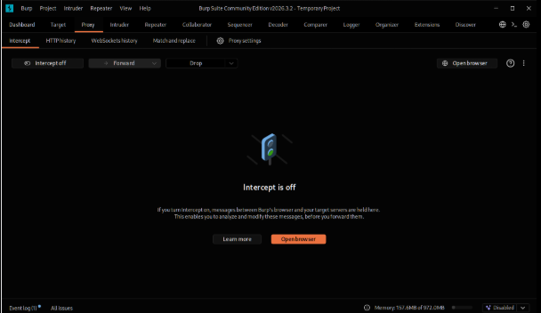
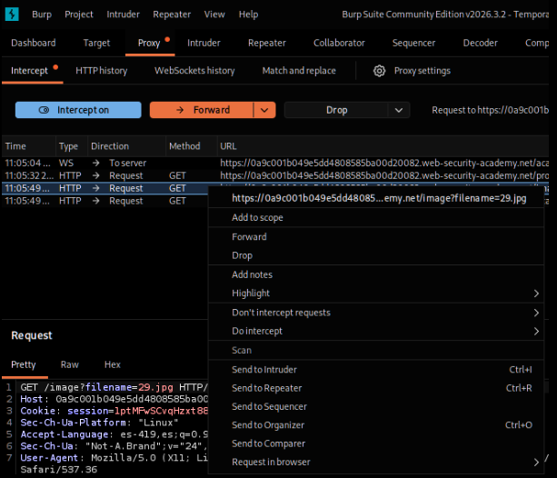
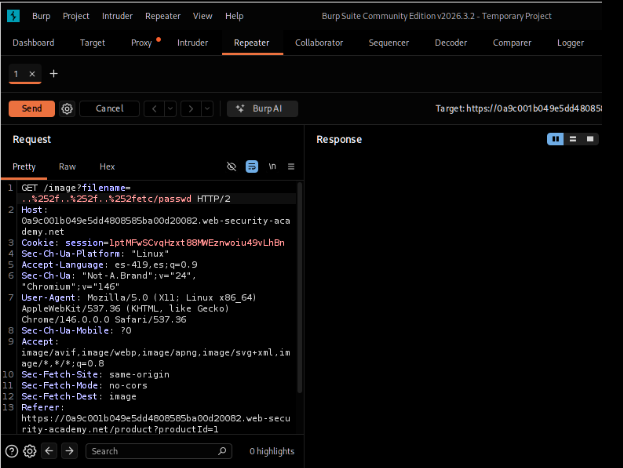
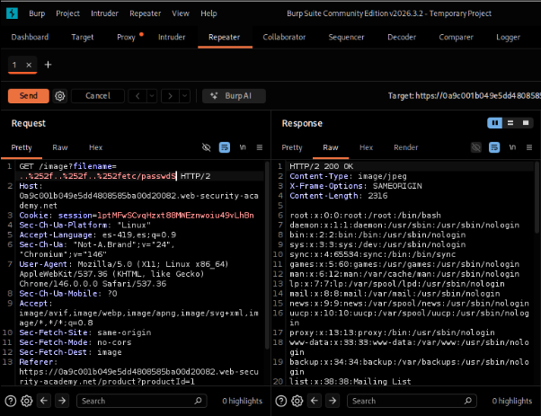
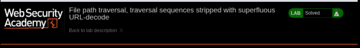

Lab 10: Traversal Stripped with Superfluous URL-Decode
PortSwigger Web Security Academy | Herramienta: Burp Suite Community Edition
01_Nombre del laboratorio
File path traversal, traversal sequences stripped with superfluous URL-decode
URL del laboratorio: https://portswigger.net/web-security/file-path-traversal/lab-superfluous-url-decode
Este laboratorio presenta un escenario donde la aplicación web intenta bloquear los ataques de Path Traversal eliminando secuencias ../, pero introduce una nueva vulnerabilidad al decodificar la entrada de forma superflua.

02_Nivel
Practitioner (Intermedio).
La dificultad radica en identificar discrepancias entre cómo el servidor web maneja la codificación y cómo lo hace el código de la aplicación (backend). El atacante debe ofuscar el payload lo suficiente para pasar el primer filtro y depender de un error lógico de decodificación posterior para reconstruirlo.
03_Tipo de explotación
File Path Traversal (Arbitrary File Read) con evasión de filtros mediante Double URL Encoding.
Por lo general, los servidores web (como Apache, Nginx o IIS) decodifican automáticamente la URL de una petición HTTP antes de pasarla a la aplicación web. Si la aplicación web incluye código que vuelve a decodificar explícitamente los datos de entrada de forma manual, se crea una discrepancia peligrosa.
Un atacante puede aplicar una "doble codificación URL" a su payload. Cuando el servidor web recibe la petición, realiza la primera decodificación. El filtro de seguridad analiza la cadena resultante, y al seguir estando codificada parcialmente, no detecta ninguna firma maliciosa (no encuentra la secuencia literal ../).
Sin embargo, después de pasar la validación con éxito, la aplicación vuelve a decodificar la cadena (decodificación superflua), devolviendo el payload malicioso a su forma original justo antes de pasarlo a la API del sistema de archivos.
Consecuencias: Lectura de archivos sensibles del sistema operativo y evasión efectiva de Firewalls de Aplicaciones Web (WAF) o filtros de sanitización implementados en el código.
04_Objetivo del laboratorio
Demostrar la explotación de una vulnerabilidad de File Path Traversal evadiendo un filtro de seguridad. Esto se logra ofuscando el parámetro filename mediante una técnica de doble codificación URL (%252e%252e%252f) para reconstruir el salto de directorio en el backend, con el fin de leer el contenido del archivo /etc/passwd del servidor y obtener la confirmación de "Lab solved".
05_Explicación técnica de la vulnerabilidad
La aplicación web utiliza el parámetro filename para cargar imágenes:
La defensa de la aplicación consta de dos partes:
- Elimina explícitamente las secuencias de recorrido (
../). - Posteriormente (y de forma insegura), decodifica la URL de la entrada del usuario antes de utilizarla para acceder al sistema de archivos.
Si enviamos el payload estándar ../../../etc/passwd, el filtro lo elimina y la explotación falla. Si enviamos el payload con codificación URL simple (%2e%2e%2f), el servidor web frontend lo decodifica automáticamente a ../ antes de que llegue a la aplicación, por lo que el filtro del backend también lo detecta y lo elimina.
El proceso del Bypass con Doble Codificación
Al enviar una doble codificación (%252e%252e%252f):
- Paso 1 (Servidor Web): Decodifica los
%25(que es el símbolo%en URL encoding). La cadena se convierte en%2e%2e%2f. - Paso 2 (Filtro): El filtro de seguridad busca la cadena literal
../. Como la entrada actual es%2e%2e%2f, el filtro no detecta peligro y permite que continúe el flujo. - Paso 3 (Decodificación Superflua): La aplicación decodifica explícitamente la cadena
%2e%2e%2ftransformándola en../. - Paso 4 (Ejecución): El sistema de archivos recibe la ruta con los saltos de directorio procesados y devuelve el archivo no autorizado.
06_Procedimiento paso a paso
Paso 1 — Preparación del entorno
Se inicia Burp Suite Community Edition desde la máquina virtual, seleccionando Temporary project in memory y Use Burp defaults.

Paso 2 — Interceptación y Navegación
Con Burp abierto, se abre el navegador integrado y se accede a la URL del laboratorio. Se apaga el interceptor para permitir la carga correcta de los recursos visuales.

Paso 3 — Generación de tráfico objetivo
Se navega a la página de un producto (clic en "View details"), lo que dispara la petición GET que solicita la imagen del producto.
Paso 4 — Enviar a Repeater
Se localiza en el historial HTTP la petición GET correspondiente (GET /image?filename=...) y se envía al módulo Repeater para inyectar el payload modificado.

Paso 5 — Modificación del Payload (Doble URL Encode)
En la pestaña Repeater, se modifica el valor del parámetro filename y se inyecta el payload ofuscado con doble codificación hexadecimal:

Se presionó "Send".
Paso 6 — Confirmación de Explotación
En el panel Response se observa un código de estado HTTP/2 200 OK. Dentro del cuerpo de la respuesta se visualiza el contenido del archivo de usuarios del sistema Linux, demostrando que el ataque tuvo éxito.

/etc/passwd devuelto por el servidor vulnerable.Se regresa a la pestaña del laboratorio en el navegador y se recarga la página, confirmando la resolución.

07_Explicación del payload
Payload utilizado:
Este payload es la representación de ../../../etc/passwd codificada dos veces mediante URL Encoding (Hexadecimal).
Codificación Simple:
- Punto
.=%2e - Barra
/=%2f - Secuencia
../=%2e%2e%2f
Doble Codificación:
Para codificar esto por segunda vez, se codifica el símbolo de porcentaje (%).
- Símbolo
%=%25 - Por lo tanto,
%2ese convierte en%252e - Y
%2fse convierte en%252f - Secuencia doblemente codificada =
%252e%252e%252f
Al repetir este bloque tres veces, nos aseguramos de escalar suficientes niveles en el árbol de directorios para llegar a la raíz. Finalmente se concatena la ruta del archivo deseado etc/passwd (el cual no es estrictamente necesario codificar porque el filtro no busca estas palabras alfabéticas de todos modos).
08_Mitigación recomendada
- Evitar decodificaciones manuales innecesarias: Confiar en que los frameworks modernos y los servidores web ya realizan la normalización y decodificación URL de las peticiones entrantes de forma estándar. No incluir funciones como
urldecode()a nivel de código de aplicación a menos que esté estrictamente justificado, ya que introducen inconsistencias. - El orden de las operaciones es crítico: Si es absolutamente necesario decodificar la entrada manualmente, la validación de seguridad (filtros, listas blancas) siempre debe realizarse al final, *después* de que se hayan completado todas las decodificaciones. Jamás se debe validar una cadena y luego decodificarla.
- Uso de referencias indirectas (Recomendación óptima): Al igual que en todos los casos de Path Traversal, la mejor defensa es evitar referenciar directamente los nombres de archivo en los parámetros HTTP. Utilizar en su lugar un identificador único (ID de base de datos) para mapear internamente la imagen que se desea mostrar.
- Canonicalización estricta: Resolver siempre la ruta final absoluta de la solicitud (
realpath()) y verificar que esté contenida dentro del directorio restringido antes de abrir el recurso (ej.startsWith("/var/www/images/")).
09_Conclusión
La validación de datos a menudo se ve frustrada por diferencias en la forma en que los distintos componentes de la arquitectura web interpretan o manipulan una entrada. La doble decodificación URL ilustra perfectamente cómo una medida de seguridad válida (el filtro) queda inoperativa simplemente porque se ejecuta en la fase incorrecta del flujo de procesamiento de la cadena.
[ Reporte técnico — Actividad 10: Traversal stripped with superfluous URL-decode ]